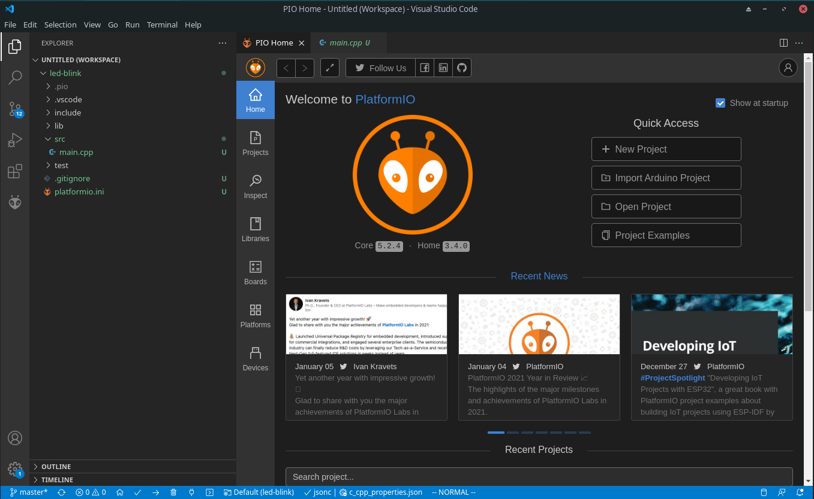
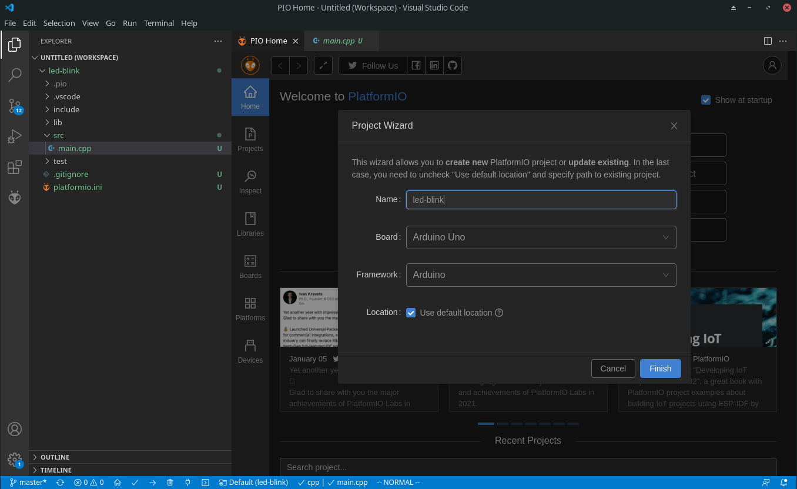
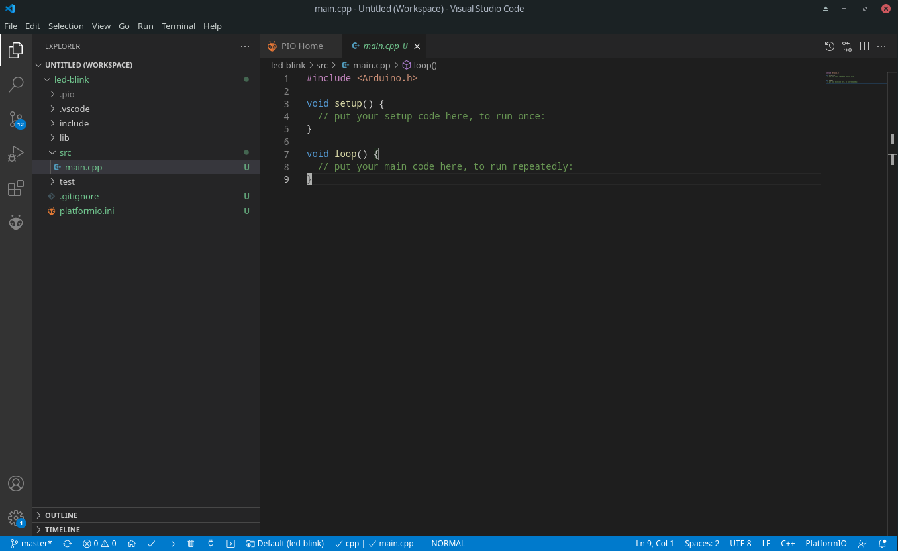
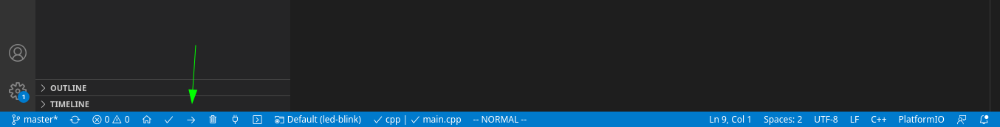

The software which runs on the microcontroller is known as embedded software, and is software which operates close to the hardware. You need an understand electronics as well as programming in order to fully master the topic of microcontroller programming.
Before we can begin our work on the learning how to develop software for the microcontroller, we must first make sure that we have a functional development environment.
In this section we cover the required set of software tools which you need to install on your PC in order to be able to develop software for the microcontroller. We hope this is not confusing, we are going to use software to create more software.
There are many alternatives for the software, especially when it comes to the software you use to write you program code. You are free to choose whatever code editor you like, but if you expect installation help from your lecturer you should choose whatever he or she is using.
The official Arduino Software (IDE) is one of the option for writing programs and uploading them to your board. There are two alternatives, the Legacy IDE, and the new IDE 2. The new IDE is significantly improved, but still not comparable to a professional IDE. You may install the Arduino IDE as a backup solution, but for most students the PlatformIO IDE (which is covered in the next section) is a better choice.
There is also a online web editor, but we do not recommend that you use it. You should not have to depend on an Internet connection to be able to do your work.
The Arduino IDE is easy to use for beginners, but it is not very rich on features. For this reason most real developers prefer alterative development environments.

PlatformIO (https://platformio.org/) is one such alternative development environment. It is a platform for embedded software development supporting a lot of different embedded platforms and boards. PlatformIO does not provide a graphical user interface of it’s own, but may be installed as a plugin to various code editors. We recommend using Visual studio code (https://code.visualstudio.com/) as the code editor [1].
Please refer to the official installation guide of PlatformIO, for instructions on how to get started. We recommend that you follow the guide to complete the installation, before getting back to this page.
One of the first things we need to do is to verify that our software and hardware is working as expected.
We will approach this by using a small program which blinks a LED. This allows us to verify that the compilation, and upload process is working. Don’t worry if you do not fully understand what this means, more on those topics will be covered later in the course.
The LED in question is the on-board LED labeled L on the circuit board. This LED is physically connected to pin 13 on the board, but for now we will not be connecting any external components.
In this section we will go step by step through a test of our PlatformIO installation.
We start by creating a new project in PlatformIO. Click on the New Project button in the PIO Home tab, and you should be presented with the following dialog:

Make sure to select the correct board and framework, and give the project a suitable name. You may choose any name you wish, but we recommend that you always select names which will make it easy to identify what the project is about. As the course progresses you will quickly build up a large collection of projects, and it will often be useful to go back to a previous project and copy some code for re-use.
Once the project is created, click on the file main.cpp in the src directory, and you should be presented with the following:

Copy the following code in to the main.cpp file, replacing the default contents of the file:
// the setup function runs once when you press reset or power the boardvoidsetup(){// initialize digital pin LED_BUILTIN as an output.pinMode(LED_BUILTIN,OUTPUT);}// the loop function runs over and over again forevervoidloop(){digitalWrite(LED_BUILTIN,HIGH);// turn the LED on (HIGH is the voltage level)delay(1000);// wait for a seconddigitalWrite(LED_BUILTIN,LOW);// turn the LED off by making the voltage LOWdelay(1000);// wait for a second}
Connect the Arduino UNO board to your PC, and wait for it to be detected. If you are using Windows, and this is the first time you are connecting the board this might take a few seconds. On Linux it should be instant.
Click the upload button, and watch the output in the console window at the bottom of the window, as shown in the following picture:

The on board LED of your arduino UNO should start to blink.
Finally try to change the delays (the numbers inside the parentheses in the delay(1000) statements) from 1000 to 100, and see how (if) it affects the blinking rate. Repeat the previous process to upload the program. That way you can be absolutely sure that you are in fact able to modify the program running inside your microcontroller.
After your modification the code should look like this:
// the setup function runs once when you press reset or power the boardvoidsetup(){// initialize digital pin LED_BUILTIN as an output.pinMode(LED_BUILTIN,OUTPUT);}// the loop function runs over and over again forevervoidloop(){digitalWrite(LED_BUILTIN,HIGH);// turn the LED on (HIGH is the voltage level)delay(100);// wait for a seconddigitalWrite(LED_BUILTIN,LOW);// turn the LED off by making the voltage LOWdelay(100);// wait for a second}
Please note that web based online simulators are not available for use on the exam. They can be a good alternative if you are traveling without your Arduino kit, but do not get too dependent on them.
Until recently, there were not any easy to use Arduino simulator. You were able to simulate the processor of Arduino (ATmega8, ATmega168, ATmega328, ATmega1280, or ATmega2560) and set the whole circuit with electronic design and circuit simulator software (such as Ptoteus) but not the whole Arduino kit itself. Lately we have gotten some alternatives and in this section we introduce one of the most used one: TinkerCAD.
It is browser based solution from Autodesk. Initially, it is not developed as an Arduino simulator. It is quite famous for 3D part designing purposes for DIY project. Since Arduino is a very common microcontroller for DIY projects, such a useful is also utilized. You can design the circuit and also write your Arduino code here.
PS: All projects you develop here are open to community, which means everyone can see what you develop if they search your project. The same way, you can search projects on the right top search button. This is a very nice feature, use it :)